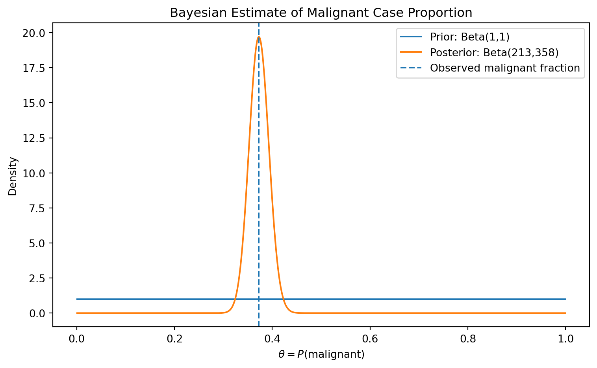
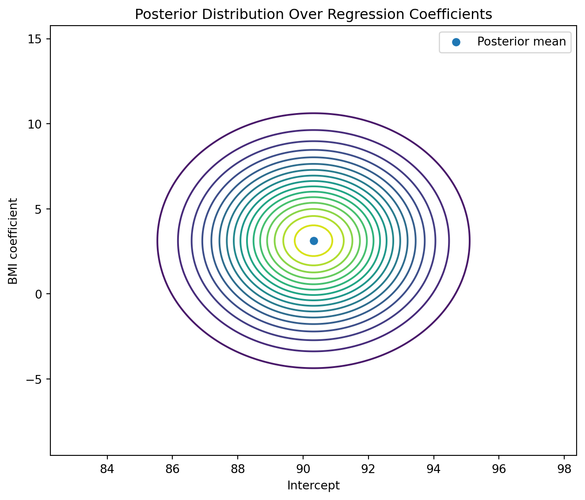
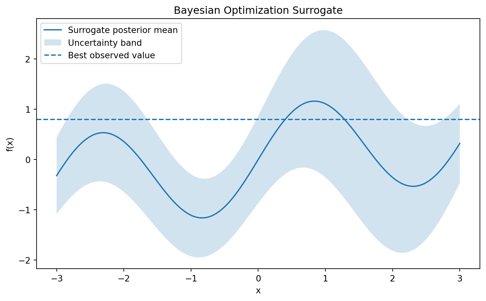
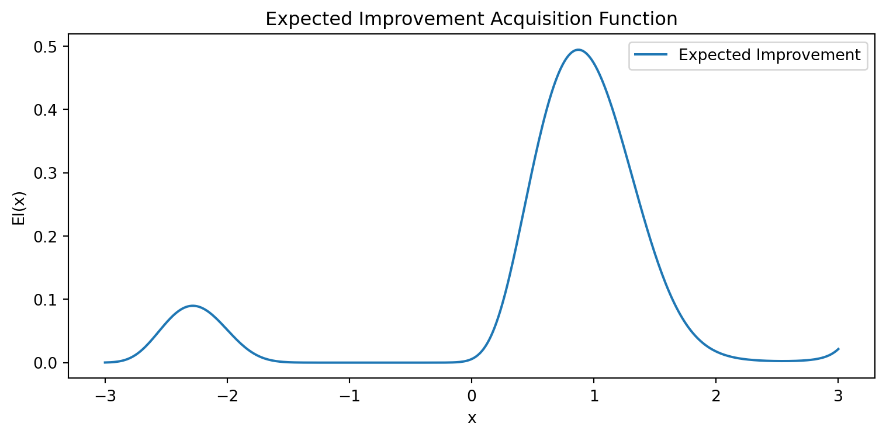

Bayesian inference is a mathematical framework for learning under uncertainty. Unlike modeling approaches that treat unknown parameters as fixed quantities to be estimated once, Bayesian inference treats unknown quantities as uncertain and represents that uncertainty using probability distributions.
In frequentist modeling, probability is usually interpreted through long-run frequencies of repeatable events. In Bayesian modeling, probability is broader: it measures uncertainty about unknown quantities. These unknown quantities may include model parameters, missing data, future observations, latent variables, model structures, or even competing scientific explanations.
Let \(\theta\) denote an unknown parameter or collection of parameters, and let \(D\) denote observed data. Bayesian inference begins with a prior distribution \(p(\theta)\) which represents uncertainty before observing the data. The data are connected to the parameters through a likelihood\(p(D\,|\,\theta)\) , which describes how probable the observed data would be if the parameter value were \(\theta\). After observing the data, uncertainty is updated into the posterior distribution \(p(\theta \,|\, D)\).
Bayesian inference is therefore a process of belief revision. It formalizes how prior assumptions and observed evidence combine to produce updated uncertainty.
1. Overview
1.1. Bayes’ Theorem
NoteTheorem: Bayes’ Theorem
Let \(A\) and \(B\) be events with \(P(B)>0\). Bayes’ theorem states that:
\[
P(A\,|\, B) = \frac{P(B\,|\, A)P(A)}{P(B)}
\]
For continuous parameters and observed data, the same idea is written as
This proportional form is often interpreted as \(\text{posterior } \propto \text{ likelihood } \times \text{ prior}\).
1.2. Sequential Updating
A key property of Bayesian inference is that it can be performed sequentially. Suppose data arrive in two batches \(D_1\) and \(D_2\). After observing \(D_1\), the posterior is
A common mistake is to treat the likelihood as a probability distribution over parameters. The likelihood \(p(D\,|\,\theta)\) is a function of \(\theta\), but it is not necessarily normalized as a distribution over \(\theta\). The posterior \(p(\theta\,|\,D)\) is the probability distribution over parameters after observing the data.
The likelihood answers:
How compatible is the observed data with each parameter value?
The posterior answers:
After combining prior information and data evidence, how plausible is each parameter value?
Two Bayesian analysts may use the same likelihood but different priors, producing different posteriors. With enough informative data, the likelihood often dominates.
2. Conjugate Bayesian Models
2.1. Conjugacy
NoteDefinition: Conjugate Prior
A prior distribution \(p(\theta)\) is conjugate to a likelihood \(p(D\,|\,\theta)\) if the posterior distribution \(p(\theta\,|\, D)\) belongs to the same family as the prior.
Conjugacy is useful because it gives closed-form posterior updates.
For example:
Likelihood
Conjugate Prior
Posterior
Bernoulli
Beta
Beta
Binomial
Beta
Beta
Poisson
Gamma
Gamma
Normal mean with known variance
Normal
Normal
Multinomial
Dirichlet
Dirichlet
Warning
Conjugate models are not always realistic.
2.2. Beta-Bernoulli Model
Suppose we observe binary outcomes \(y_i \in \{0,1\}\). Let \(\theta = P(Y=1)\). The Bernoulli likelihood for one observation is
For \(n\) independent observations, let \(s= \sum_{i=1}^n y_i\) be the number of successes, and \(f=n-s\) be the number of failures. The likelihood is
\[
p(D\,|\, \theta) = \theta ^s(1-\theta)^f
\]
Assume a Beta prior \(\theta\sim \text{Beta}(\alpha, \beta)\).
NoteDefinition: Beta distribution
The Beta distribution is a family of continuous probability distributions defined on the interval \([0,1]\) in terms of two positive parameters, denoted by \(\alpha\) and \(\beta\). The probability density function (PDF) of the beta distribution for \(0\leq \theta\leq 1\) and shape parameters \(\alpha, \beta >0\) is a power function of the variable \(\theta\) and of its reflection \((1-\theta)\) as follows:
The prior parameters \(\alpha\) and \(\beta\) act like pseudo-counts \(\alpha-1\) prior successes and \(\beta-1\) prior failures, depending on interpretation. After observing data, Bayesian updating adds observed successes and failures to prior information.
2.3. Diagnostic Rate from the Breast Cancer Dataset
The Wisconsin breast cancer dataset contains real diagnostic labels: malignant and benign. We can use a Beta-Bernoulli model to estimate the uncertainty about the proportion of malignant cases in the sample.
Show code
import numpy as npimport matplotlib.pyplot as pltfrom scipy.stats import betafrom sklearn.datasets import load_breast_cancerdata = load_breast_cancer()y = data.target# In sklearn breast cancer dataset:# target_names are ['malignant', 'benign']# y=0 malignant, y=1 benignmalignant = (y ==0).astype(int)s = malignant.sum()n =len(malignant)f = n - salpha_prior, beta_prior =1, 1alpha_post = alpha_prior + sbeta_post = beta_prior + ftheta = np.linspace(0.001, 0.999, 1000)prior_density = beta.pdf(theta, alpha_prior, beta_prior)posterior_density = beta.pdf(theta, alpha_post, beta_post)plt.figure(figsize=(8, 5))plt.plot(theta, prior_density, label="Prior: Beta(1,1)")plt.plot(theta, posterior_density, label=f"Posterior: Beta({alpha_post},{beta_post})")plt.axvline(s / n, linestyle="--", label="Observed malignant fraction")plt.title("Bayesian Estimate of Malignant Case Proportion")plt.xlabel(r"$\theta = P(\mathrm{malignant})$")plt.ylabel("Density")plt.legend()plt.tight_layout()plt.show()credible_interval = beta.ppf([0.025, 0.975], alpha_post, beta_post)print("Number of cases:", n)print("Observed malignant cases:", s)print("Posterior mean:", alpha_post / (alpha_post + beta_post))print("95% credible interval:", credible_interval)

Number of cases: 569
Observed malignant cases: 212
Posterior mean: 0.37302977232924694
95% credible interval: [0.33383542 0.41306663]
3. Posterior Prediction
3.1. Posterior Predictive Distribution
Let \(z_{new}\) be a future observation. Bayesian prediction averages over posterior uncertainty:
This is called the posterior predictive distribution.
The key idea is that predictions should not pretend the parameter is known exactly; instead, prediction should account for all plausible parameter values, weighted by their posterior probability.
3.2. Posterior Predictive Distribution in the Beta-Bernoulli Model
In the Beta-Bernoulli model, \(Y_\text{new} \,|\, \theta \sim \text{Bernoulli}(\theta)\) and \(\theta\,|\, D\sim \text{Beta}(\alpha+s,\beta+f).\) The posterior predictive probability of success is
\[
P(Y_\text{new}=1\,|\, D)=\int_0^1 P(Y_\text{new}=1\,|\,\theta)p(\theta\,|\, D)d\theta.
\] Since \(P(Y_\text{new}=1\,|\, \theta)=\theta\), we get
A Bayesian credible interval gives an interval that contains the unknown parameter with a specified posterior probability. A 95% credible interval \([a,b]\) satisfies
\[
P(a\leq \theta\leq b \,|\, D) = 0.95
\]
This differs from a frequentist confidence interval, which has a repeated-sampling interpretation. In Bayesian inference, after observing the data and assuming the model, the probability statement is directly about the parameter.
\(\Phi\in \mathbb R^{n\times M}\) is the design matrix,
\(w\in \mathbb R^M\) is the coefficient vector,
\(\epsilon\) is noise.
In ordinary least squares, \(w\) is estimated as a fixed unknown quantity. In Bayesian linear regression, \(w\) is treated as a random vector.
Assume \(t= \Phi w+\epsilon\), where \(\epsilon\sim \mathcal N(0, \beta^{-1}I)\). Here \(\beta\) is the noise precision, meaning \(\beta= \frac{1}{\sigma^2}\). The likelihood is
The diabetes dataset contains real medical measurements and a quantitative disease progression target. We can fit a Bayesian linear regression model to estimate uncertainty in the relationship between body mass index and disease progression.
Posterior mean of weights: [90.31967764 3.12828751]
Posterior covariance: [[4.06312962e+00 1.32244776e-15]
[1.32120084e-15 9.96705107e+00]]
Show code
import numpy as npimport matplotlib.pyplot as pltfrom scipy.stats import multivariate_normal# Grid over intercept and slopew0 = np.linspace(mN[0] -4*np.sqrt(SN[0, 0]), mN[0] +4*np.sqrt(SN[0, 0]), 200)w1 = np.linspace(mN[1] -4*np.sqrt(SN[1, 1]), mN[1] +4*np.sqrt(SN[1, 1]), 200)W0, W1 = np.meshgrid(w0, w1)grid = np.column_stack([W0.ravel(), W1.ravel()])density = multivariate_normal(mean=mN, cov=SN).pdf(grid).reshape(W0.shape)plt.figure(figsize=(7, 6))plt.contour(W0, W1, density, levels=20)plt.scatter([mN[0]], [mN[1]], label="Posterior mean")plt.title("Posterior Distribution Over Regression Coefficients")plt.xlabel("Intercept")plt.ylabel("BMI coefficient")plt.legend()plt.tight_layout()plt.show()

5. Gaussian Processes
Bayesian linear regression places a distribution over weights \(w\). A Gaussian Process, or GP, places a distribution directly over functions.
Gaussian Process
A GP is useful when we want flexible nonlinear regression with uncertainty quantification.
NoteDefinition: Gaussian Process
A Gaussian Process is a collection of random variables \(\{f(x):x\in \mathcal X\}\) such that every finite subset \((f(x_1),\dots,f(x_n))\) has a multivariate normal distribution.
A GP is written as
\[
f(x) \sim \mathcal{GP} (m(x), k(x, x')),
\]where \(m(x) = \mathbb E[f(x)]\) is the mean function, and \(k(x, x')=Cov(f(x),f(x'))\) is the covariance or kernel function.
5.1. Gaussian Process Prior
For inputs \(X=(x_1, \dots, x_n),\) define \(f_X=(f(x_1), \dots, f(x_n))^\top\). Under a GP prior,
\[
f_X \sim \mathcal N(m_X, K_{XX}),
\]
where \(m_X=(m(x_1),\dots, m(x_n))^\top\), \((K_{XX})_{ij}=k(x_i, x_j).\) A common kernel is the squared exponential, or RBF kernel:
In previous chapter, a deterministic neural network uses fixed weights \(\hat y=f_\theta(x)\). A Bayesian Neural Network, or BNN, places a prior over the weights \(p(\theta)\). After observing data, \(D=\{(x_i, y_i)\}_{i=1}^n\), the posterior is
The difficulty is that neural networks are nonlinear in \(\theta\). Therefore, the posterior is usually non-Gaussian and analytically intractable.
BNNs are valuable when uncertainty matters. For example, in medical diagnosis or autonomous control, a model should not only predict a class but also indicate whether it is uncertain due to limited or unfamiliar data.
6.2. Epistemic and Aleatoric Uncertainty
Bayesian models often distinguish two kinds of uncertainty.
NoteDefinition: Aleatoric Uncertainty
Aleatoric uncertainty is irreducible randomness in the data-generating process. It remains even with infinite data. Example:
\[
Y=f(X)+ \epsilon,
\]
where \(\epsilon\) represents observation noise.
NoteDefinition: Epistemic Uncertainty
Epistemic uncertainty is uncertainty due to limited knowledge or limited data. It can decrease as more data are observed. In Bayesian modeling, posterior uncertainty about parameters is epistemic uncertainty.
The denominator is often intractable because the parameter space is high-dimensional or the likelihood is non-conjugate. Approximate inference methods replace exact integration with deterministic approximation, optimization, or sampling.
7.1. Laplace Approximation
The Laplace approximation approximates the posterior with a Gaussian centered at the maximum a posteriori estimate.
Variational inference, or VI, turns inference into optimization.
Let \(p(z\,|\, x)\) be an intractable posterior. Choose a tractable family \(\mathcal Q\) of approximate distributions \(q(z) \in \mathcal Q\). The goal is to find
Since \(KL(q\|p)\geq 0\), we have \(\mathcal L(q) \leq \log p(x)\). Thus, maximizing the ELBO is equivalent to minimizing the KL divergence from \(q\) to the posterior.
7.3. Expectation Propagation
Expectation Propagation, or EP, is a deterministic approximation method that approximates complicated posterior factors with simpler factors.
Each factor is updated by temporarily removing it, incorporating the exact factor, and then projecting the result back into the chosen approximate family by moment matching.
EP is especially useful when local factors are non-Gaussian but can be approximated well by distributions with matched moments.
7.4. Markov Chain Monte Carlo
Markov Chain Monte Carlo, or MCMC, approximates posterior expectations using samples.
Gibbs sampling is an MCMC method used when conditional distributions are easier to sample than the joint posterior. Suppose \(\theta=(\theta_1, \theta_2, \dots, \theta_d)\). Gibbs sampling iteratively samples:
This is useful in hierarchical Bayesian models, mixture models, and latent variable models when full conditional distributions are unknown.
7.7. Hamiltonian Monte Carlo
Hamiltonian Monte Carlo, or HMC, improves MCMC by using gradient information to propose distant moves with high acceptance probability.
Introduce momentum variables \(r\) and define the Hamiltonian
\[
H(\theta,r) = U(\theta)+K(r),
\] where \(U(\theta) = -\log p(\theta\mid D)\) is potential energy, and \(K(r) = \frac{1}{2}r^\top M^{-1}r\) is kinetic energy.
HMC simulates Hamiltonian dynamics: \[
\begin{aligned}
\frac{d\theta}{dt} &= \frac{\partial H}{\partial r} = M^{-1}r,
\\
\frac{dr}{dt} &= -\frac{\partial H}{\partial \theta} = -\nabla_\theta U(\theta).
\end{aligned}
\] The purpose is to move through the posterior geometry efficiently rather than wandering randomly.
8. Bayesian Model Comparison
8.1. Marginal Likelihood
The marginal likelihood, or evidence, is
\[
p(D\mid M) = \int p(D\mid \theta,M)p(\theta\mid M)d\theta.
\]
It averages the likelihood over the prior. This quantity rewards models that explain the data well but penalizes models that spread prior probability over many unsupported parameter values. This creates a built-in complexity penalty.
Model averaging accounts for uncertainty about which model is correct.
8.4. Bayesian Information Criterion
The Bayesian Information Criterion, or BIC, is
\[
BIC = -2\log \hat{L} + d\log n,
\] where:
\(\hat{L}\) is the maximized likelihood,
\(d\) is the number of parameters,
\(n\) is the sample size.
A lower BIC is preferred.
BIC can be understood as a large-sample approximation related to the marginal likelihood. It rewards goodness of fit through \(-2\log \hat{L}\) and penalizes model complexity through \(d\log n\).
9. Bayesian Optimization
Bayesian optimization is used to optimize expensive black-box functions. Suppose we want to solve
\[
x^* = \arg\max_{x\in\mathcal{X}} f(x),
\]
but evaluating \(f(x)\) is expensive. Examples include tuning deep learning hyperparameters, optimizing chemical compounds, or controlling engineering systems.
Bayesian optimization builds a probabilistic surrogate model, often a Gaussian process:
\[
f\sim\mathcal{GP}(m,k).
\]
After observing evaluations
\[
D_t=\{(x_i,f(x_i))\}_{i=1}^{t},
\]
the surrogate gives a posterior distribution over f. An acquisition function chooses the next point to evaluate:
\[
x_{t+1} = \arg\max_x a(x;D_t).
\]
Let \(f_{\max}\) be the best observed value so far. If the surrogate predicts
\[
f(x)\sim \mathcal{N}(\mu(x),\sigma^2(x)),
\]
then improvement is
\[
I(x)=\max(0,f(x)-f_{\max}).
\] Expected Improvement is
where \(Z= \frac{\mu(x)-f_{\max}}{\sigma(x)},\) and \(\Phi\), \(\phi\) are the standard normal CDF and PDF.
The first term rewards exploitation, where the predicted mean is high. The second term rewards exploration, where uncertainty is high.
Show code
import numpy as npimport matplotlib.pyplot as pltfrom scipy.stats import normx = np.linspace(-3, 3, 400)# Toy surrogate posterior mean and uncertaintymu = np.sin(2* x) +0.2* xsigma =0.2+0.6* np.exp(-0.5* (x -1.5)**2) +0.3* np.exp(-0.5* (x +2)**2)f_best =0.8Z = (mu - f_best) / sigmaEI = (mu - f_best) * norm.cdf(Z) + sigma * norm.pdf(Z)plt.figure(figsize=(8, 5))plt.plot(x, mu, label="Surrogate posterior mean")plt.fill_between(x, mu -2*sigma, mu +2*sigma, alpha=0.2, label="Uncertainty band")plt.axhline(f_best, linestyle="--", label="Best observed value")plt.title("Bayesian Optimization Surrogate")plt.xlabel("x")plt.ylabel("f(x)")plt.legend()plt.tight_layout()plt.show()plt.figure(figsize=(8, 4))plt.plot(x, EI, label="Expected Improvement")plt.title("Expected Improvement Acquisition Function")plt.xlabel("x")plt.ylabel("EI(x)")plt.legend()plt.tight_layout()plt.show()


10. Statistical Relational Learning
Many real-world datasets are not flat tables. They contain objects and relations:
patients, doctors, visits, diagnoses,
students, courses, instructors,
papers, authors, institutions,
users, products, transactions,
proteins, genes, pathways.
Statistical Relational Learning combines probabilistic modeling with relational structure. A probabilistic relational model may define distributions over attributes of objects while allowing dependencies through relations.
Bayesian logic programs and probabilistic relational models extend Bayesian networks by allowing logical variables, relations, and repeated structures. The key idea is that uncertainty does not only live in scalar parameters. It also exists in relational systems where entities influence one another through structured dependencies.
11. Practical Applications
11.1. Medical Diagnostics
Bayesian methods are natural for medicine because diagnosis is uncertain and evidence accumulates sequentially.
Let \(D\) represent disease status, and let \(T\) represent a test result. Bayes’ theorem gives
\[
P(D\mid T) = \frac{P(T\mid D)P(D)} {P(T)}.
\]
The prior \(P(D)\) may come from disease prevalence. The likelihood \(P(T\mid D)\) comes from test sensitivity and specificity. The posterior \(P(D\mid T)\) is the updated probability after the test. This framework makes clear why a highly accurate test can still produce many false positives when the disease is rare.
Bayesian inference is widely used in genetics and bioinformatics because biological data often contain:
high-dimensional measurements,
small sample sizes,
noisy observations,
hierarchical structure,
prior biological knowledge.
Examples include:
gene expression modeling,
protein classification,
genomic selection,
phylogenetic inference,
DNA motif discovery.
A Bayesian model can include prior knowledge about gene effects or pathway structure, and posterior distributions can express uncertainty in biological conclusions.
11.3. Engineering Design and Control
In engineering, Bayesian methods are useful when experiments are expensive.
For example, suppose an engineer wants to tune control parameters \(x\) to maximize system performance \(f(x)\). Each experiment is costly. Bayesian optimization can use previous evaluations to decide the next experiment efficiently.
This is especially valuable for:
particle accelerator tuning,
analog circuit design,
robotics control,
energy management,
materials discovery.
11.4. Chemistry and Drug Discovery
In virtual screening, the goal is to identify molecules likely to have desired properties, such as binding affinity or biological activity.
Let \(x\) represent molecular descriptors, and let \(y\) represent measured activity.
A Bayesian model estimates
\[
p(y\mid x,D)
\]
and can prioritize molecules with high predicted activity or high uncertainty.
Bayesian optimization can balance:
exploitation: testing molecules likely to work,
exploration: testing uncertain molecules that may reveal new chemical structures.
Bayesian inference is a general framework for learning from data by updating uncertainty. It begins with a prior distribution, combines it with a likelihood, and produces a posterior distribution. This posterior becomes the central object of inference.
Unlike methods that produce only point estimates or deterministic predictions, Bayesian modeling produces distributions over unknown quantities. A Bayesian model asks not only, “What is the best estimate?” but also, “How uncertain are we, and how should that uncertainty affect prediction and decision-making?”
The posterior predictive distribution is one of the most important Bayesian outputs:
It shows that prediction should average over uncertainty rather than ignore it.
Bayesian linear regression illustrates how prior precision and data precision combine algebraically. Gaussian processes extend Bayesian reasoning from parameters to functions. Bayesian neural networks extend it to deep nonlinear models, though often requiring approximate inference. Laplace approximation, variational inference, expectation propagation, and MCMC provide different strategies for handling intractable posteriors. Bayesian model comparison, model averaging, and Bayesian optimization show that Bayesian inference is not limited to estimating parameters; it can guide model choice and sequential decision-making.
The main lesson is that Bayesian inference is not merely a modeling technique. It is a disciplined way to reason under uncertainty. It gives a mathematical language for combining prior knowledge, observed data, model assumptions, and future predictions into a coherent inferential system.